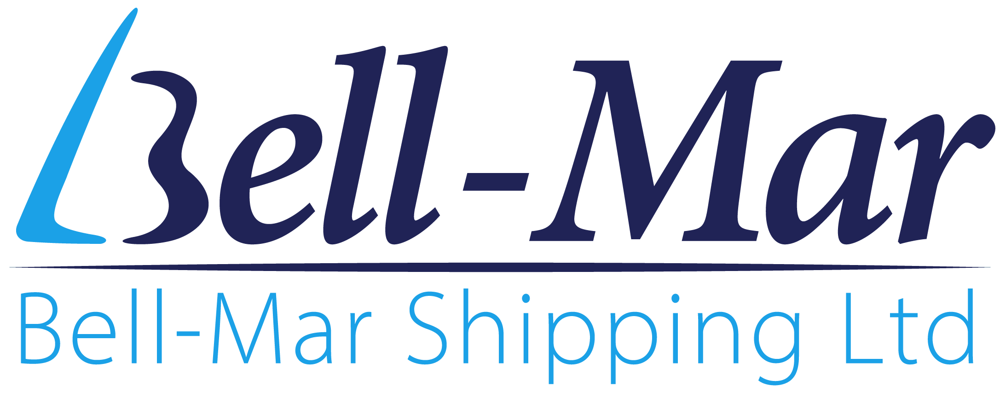

אקו דיפו
מחלקת השטיפה, האחסון והתחזוקה של אקו אויל.
אקו דיפו פועלת מאז 2017 כזרוע התפעולית של אקו אויל בתחום שטיפת מיכלים, אחסון ותחזוקה. המתקן כולל עמדות שטיפה ייעודיות לאיזוטנקים ומיכליות כביש, מגרש אחסון מאובטח, ותשתית לתיקון ותחזוקה שוטפת. כל תהליך מתועד במלואו ומלווה בבקרת איכות — מרגע הכניסה למתקן ועד לשחרור.
המתקן ממוקם בסמוך לנמל חיפה — מיקום אסטרטגי המאפשר שירות ישיר ומהיר לחברות ספנות, הובלה ותעשייה הפועלות באזור.
שירותי שטיפה
מתקן השטיפה של אקו דיפו מטפל בשלושה סוגי מיכלים — כל אחד עובר תהליך שטיפה מותאם בהתאם לסוג החומר האחרון שהכיל ולדרישות הלקוח.
איזוטנקים
שטיפה מקצועית של איזוטנקים לסוגיהם. כל איזוטנק עובר תהליך שטיפה מלא עם תיעוד MSDS של החומר האחרון, צילום לפני ואחרי, ותעודת שטיפה בתום התהליך.
מיכליות כביש

שטיפת מיכליות כביש עם עד 6 תאים. כל תא נשטף ומתועד בנפרד — כולל רישום החומר האחרון, שיטת השטיפה ותוצאת הבדיקה.
אריזות — קוביות וחביות

שטיפת מיכלי IBC (קוביות) וחביות תעשייתיות. פתרון לאריזות שהכילו חומרים כימיים או מסוכנים הדורשות שטיפה מוסמכת לפני שימוש חוזר או סילוק.
שיטות השטיפה
בהתאם לסוג החומר האחרון ולדרישות הלקוח, אנו מפעילים שילוב של שיטות שטיפה מתקדמות:
תעודות השטיפה מופקות בהתאם למודל המקובל בתחנות שטיפה מובילות באירופה, ומפרטות את כלל שלבי הטיפול שבוצעו.

שירותים נלווים
אקו דיפו מספקת מעטפת שירותים מלאה למיכלים ולאיזוטנקים:

שינוע
הובלת איזוטנקים ומיכליות מאתר הלקוח ובחזרה, כולל שינוע פנימי באתר.

אחסון
אחסון איזוטנקים ומיכלים באתר מאובטח ומאושר — לתקופות קצרות וארוכות.

תיקון ותחזוקה
ביצוע תיקונים ותחזוקה שוטפת לאיזוטנקים — כולל תיעוד מלא ודוח תוצאות.

בדיקות ואקום
בדיקות אטימות ואקום לאיזוטנקים — לאימות תקינות המיכל לפני שחרור.

סט צילומים
תיעוד צילומי לפני ואחרי השטיפה ובמהלך תיקונים — חלק בלתי נפרד מבקרת האיכות.

פוליש
גימור וליטוש פנימי של מיכלים לפי דרישה — להשגת רמת ניקיון מירבית.
תהליך העבודה
כל מיכל שנכנס למתקן עובר תהליך מובנה ומתועד — מרגע ההגעה ועד לשחרור:
קליטה ותיעוד
רישום פרטי הנכס, קבלת מסמך MSDS של החומר האחרון, תיעוד צילומי ראשוני.
שטיפה
ביצוע מחזורי שטיפה בהתאם לסוג החומר — עם בדיקת תוצאה (עבר/נכשל) בסיום כל מחזור.
תיקון ותחזוקה
ביצוע תיקונים ותחזוקה לפי הצורך — כולל תיעוד ודוח תוצאות.
אחסון
אחסון באתר מאושר לתקופה מוגדרת — בהתאם לצורכי הלקוח.
בקרת איכות ושחרור
הפקת תעודת שטיפה ומסמך שחרור. שחרור הנכס רק לאחר אישור QC מלא.
טווחי מחירים והערכת עלויות
שירותי אקו דיפו מותאמים לכל מיכלית ולכל סוג חומר, ולכן המחיר נקבע בהתאם למאפייני העבודה בפועל. על מנת לאפשר שקיפות והבנה מוקדמת, ולספק אינדיקציה, ריכזנו טווחי מחירים להמחשה בלבד.
העלות הסופית נקבעת בהתאם למספר גורמים מרכזיים: סוג החומר האחרון שהובל, רמת הניקוי הנדרשת, מספר תאים במיכלית, וכן שירותים נלווים כגון בדיקות, תיקונים ואחסנה.
טווחי מחירים לדוגמה
שטיפת איזוטנקים
| קטגוריית חומר | מחיר (₪) |
|---|---|
| ממיסים ותשטיפים (אצטון, קסילן ודומיהם) | החל מ-750 |
| חומצות (אצטית, אקרילית ודומיהן) | החל מ-950 |
| שמנים צמחיים ובסיסיים | החל מ-750 |
| חומרים מינרליים | החל מ-1,100 |
| רזינים, דבקים וחומרים מורכבים | החל מ-1,700 |
| חומרים מיוחדים / מסוכנים | לפי הצעת מחיר |
המחירים המוצגים מהווים מחיר פתיחה, ועשויים להשתנות בהתאם לרמת הזיהום, דרישות ניקוי מיוחדות, צורך בחומרים ייעודיים או טיפול נוסף.
שטיפת מיכליות כביש
| קבוצת חומרים | לתא (₪) |
|---|---|
| קבוצה 1 — ממיסים, אלכוהולים, חומצי קל | החל מ-135 |
| קבוצה 2 — שמנים ומינרלים | החל מ-168 |
| קבוצה 3 — חומרים בסיסיים | החל מ-225 |
| קבוצה 4 — שמנים מיוחדים ומיקס | החל מ-250 |
המחיר לתא נקבע בהתאם למורכבות העבודה ולשימוש בציוד ייעודי כגון משאבות.
ייבוש המיכלית כלול בשירות ואינו כרוך בתוספת תשלום.
שירותים נלווים
| שירות |
|---|
| אחסון איזוטנק (ליום) |
| הנפה (כניסה / יציאה) |
| בדיקת ואקום |
| סט צילומים (לפני + אחרי) |
| פוליש |
| החלפת דיסקית פיצוץ |
| החלפת אטם עליון |
| הובלות |
| תיקונים מבניים (קורות, ניצבים, מדרכים) |
התמחור בהתאם לשירות הנדרש.
הטווחים המוצגים נועדו להמחשה בלבד ואינם מהווים הצעת מחיר מחייבת.
כל מקרה נבחן לגופו, ואנו מספקים הצעת מחיר מדויקת לאחר קבלת פרטי המיכלית והחומר.
במקרים רבים ניתן להעריך עלות כבר בשלב מוקדם באמצעות העברת נתונים בסיסיים, וצוות אקו דיפו זמין לייעוץ ולהכוונה טרם הגעת המיכלית.
לקבלת הערכת מחיר מדויקת, נשמח שתצרו קשר ותעבירו את פרטי המיכלית והחומר.
תעודות ותיעוד
כל תהליך במתקן מלווה בתיעוד מלא. המסמכים הבאים מופקים ומועברים ללקוח:
לחצו על אחד הכרטיסים המסומנים כדי לצפות בדוגמה.
היתרונות של אקו דיפו

קרבה לנמל חיפה
כ-15 דקות מהנמל — שירות ישיר ומהיר לחברות הפועלות עם הנמל, ללא צורך בשינוע ארוך.

מערכת מעקב דיגיטלית
פורטל לקוחות מקוון למעקב בזמן אמת אחר סטטוס הנכס — תור, שטיפה, תיקון, אחסון, מוכן לאיסוף.

תקן אירופי
תעודות שטיפה מופקות בהתאם למודל המקובל בתחנות השטיפה המובילות באירופה — שקיפות ואמינות מלאות.
לקוחותינו
אקו דיפו נותנת שירות לחברות ספנות, חברות הובלה, מפעלי תעשייה וחברות כימיקלים הפועלות עם נמל חיפה והתעשייה בצפון.

איך מגיעים אלינו
המתקן ממוקם בנשר, כ-15 דקות נסיעה מנמל חיפה — נגיש לחברות הספנות, ההובלה והתעשייה הפועלות באזור.
כתובת
המסילה 1, נשרטלפון
054-323-2617דוא״ל
shtifot@eco-oil.co.ilשעות פעילות
ימים א' עד ה': 06:00 – 16:00
ימי ו' וערבי חג: בתיאום מראש ואישור
צור קשר — אקו דיפו
צריכים שטיפה, אחסון או תחזוקה? מלאו את הפרטים ונחזור אליכם בהקדם.